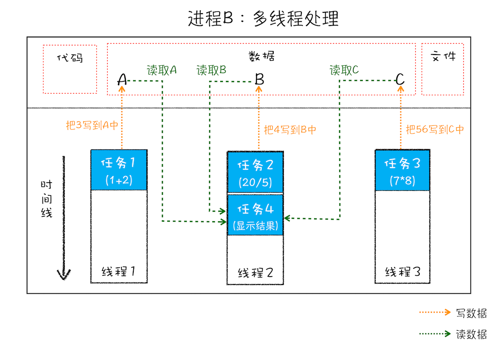

在了解浏览器原理之前需要先了解进程与线程
线程与进程
简单来讲，进程就是CPU资源分配的最小单位，而线程则是CPU调度的最小单位。
要介绍进程与线程的话，需要先讲解下并行处理
什么是并行处理
计算机中的并行处理就是同一时刻处理多个任务，比如我们要计算下面这三个表达式的值，并显示出结果。
A = 1+2
B = 20/5
C = 7*8
console.log(A + B + C);
在编写代码的时候，我们可以把这个过程拆分为四个任务： 任务 1 是计算 A=1+2； 任务 2 是计算 B=20/5； 任务 3 是计算 C=7*8； 任务 4 是显示最后计算的结果。
单线程处理：分四步按照顺序分别执行这四个任务
多线程处理：先使用三个线程同时执行前三个任务；再执行第四个显示任务。
单线程执行需要四步，而使用多线程只需要两步。
线程 VS 进程
进程：启动一个程序的时候，操作系统会为该程序创建一块内存，用来存放代码、运行中的数据和一个执行任务的主线程，我们把这样的一个运行环境叫进程。
线程：线程是依附于进程的，而进程中使用多线程并行处理能提升运算效率。

进程和线程之间的关系有以下 4 个特点：
- 进程中的任意一线程执行出错，都会导致整个进程的崩溃。很常见就是JavaScript出现的执行线程出错时会导致整个页面进程的崩溃，而导致页面白屏。
- 线程之间共享进程中的数据。一个线程使用某些共享内存时，其他线程必须等它结束，才能使用这一块内存。
- 当一个进程关闭之后，操作系统会回收进程所占用的内存。
- 进程之间的内容相互隔离。每个进程都只能访问自己访问的数据，这可以有效的避免一个进程的崩溃而影响到其他的进程。如果进程之间有进行数据通信的需要，这时候就需要进程通信（IPC）机制了。
操作系统的设计，因此可以归结为三点：
（1）以多进程形式，允许多个任务同时运行；
（2）以多线程形式，允许单个任务分成不同的部分运行；
（3）提供协调机制，一方面防止进程之间和线程之间产生冲突，另一方面允许进程之间和线程之间共享资源。